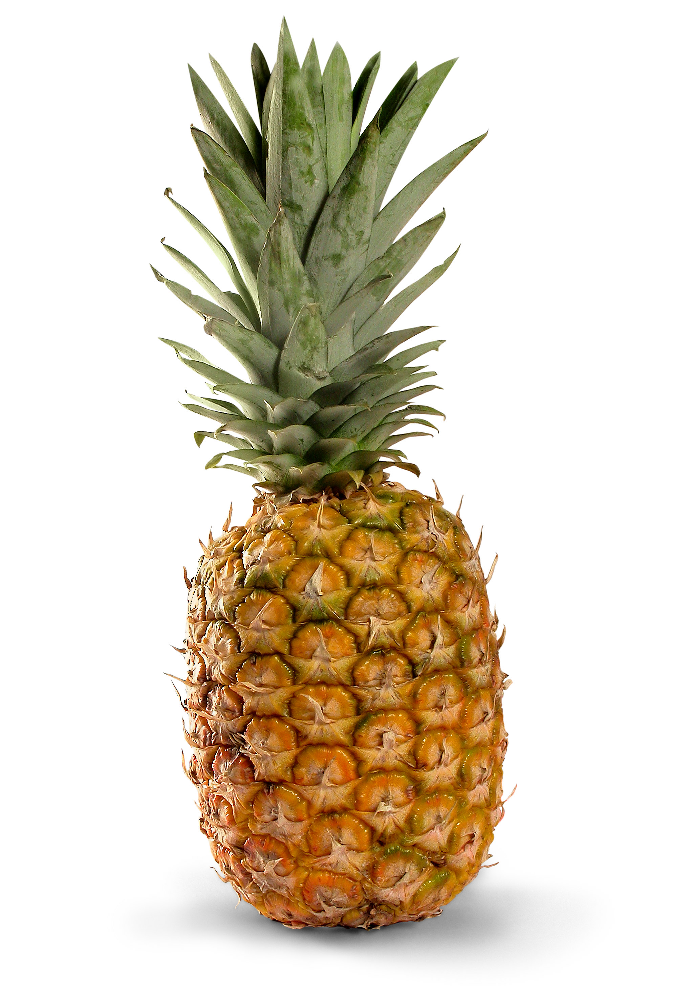

CHOQUE DE LA PIÑA

La piña, además de ser una fruta tropical y presumir de un estupendo sabor, contiene propiedades muy saludables para el organismo. Entra en este artículo enviado por una usuaria y disfruta de sus ventajas nutricionales.